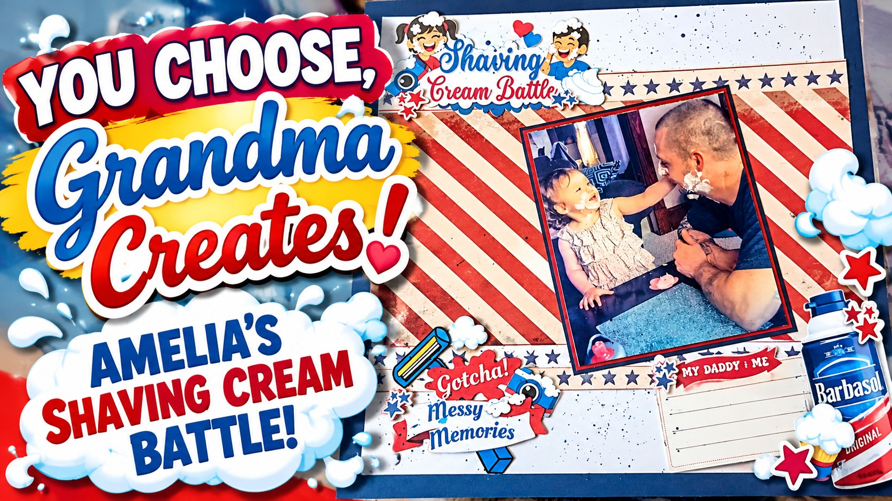
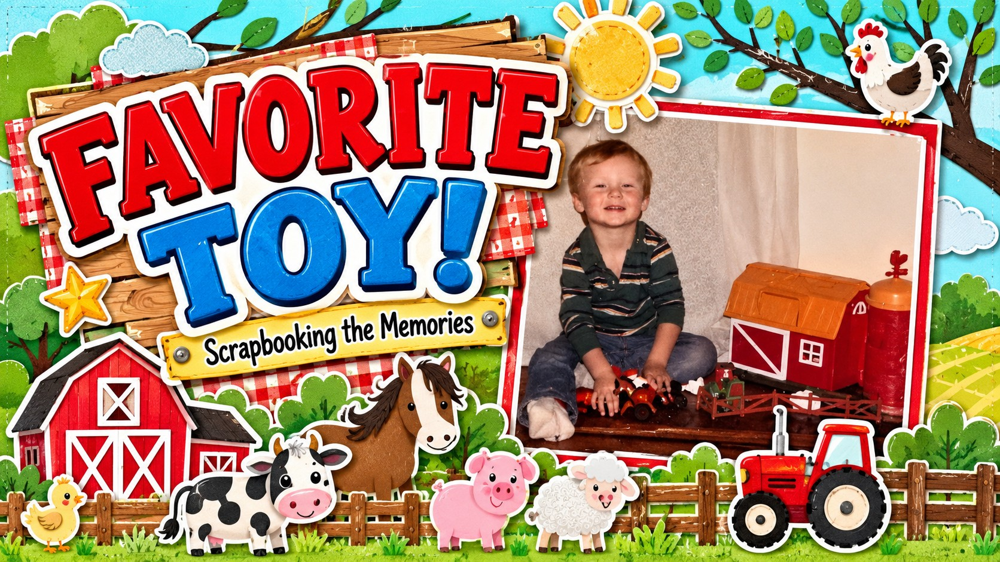
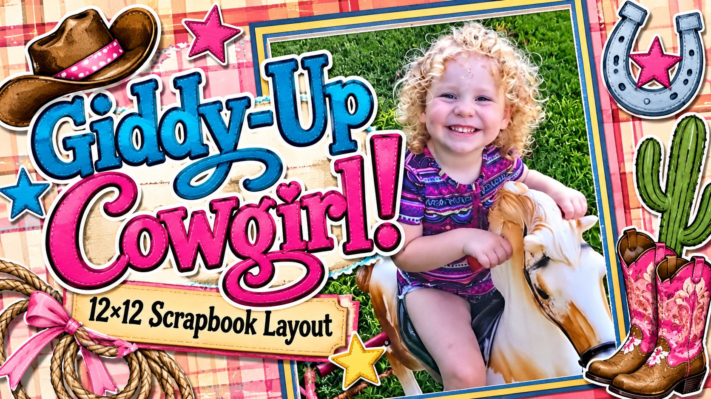
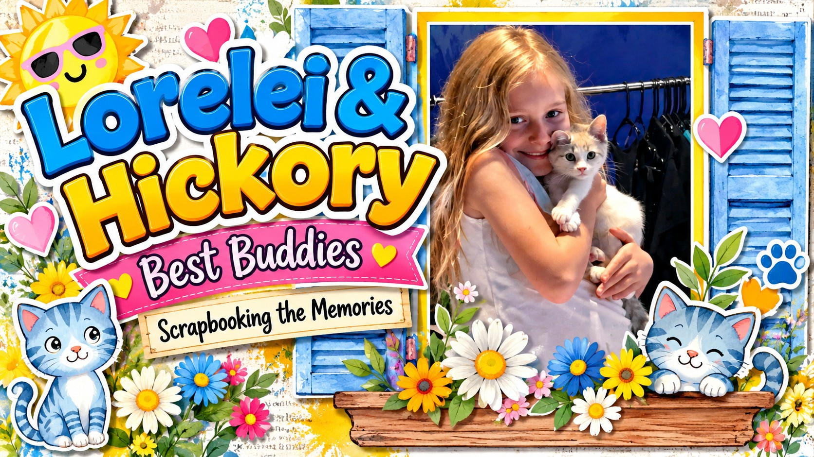
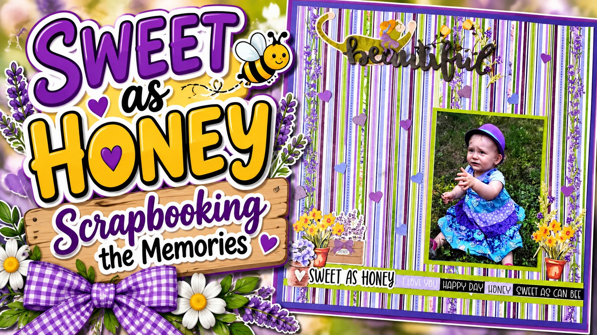
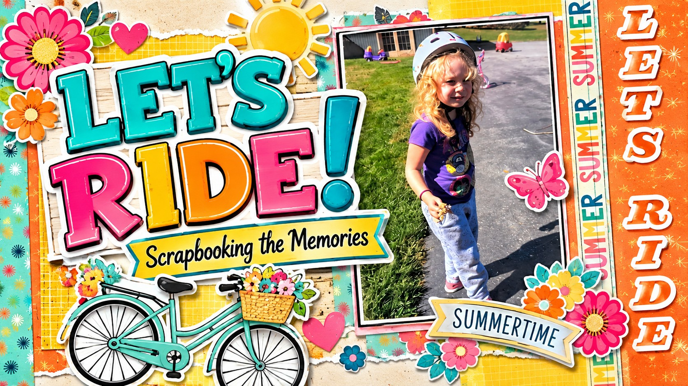

Scrapbooking Grandma Memories
A collection of scrapbook layouts created from Grandma’s favorite memories — newest videos at the top.
Shaving Cream Battle! | Amelia’s Funny Memory with Dad

Amelia chose the memory — and Grandma created the layout! ❤️💙
Inspired by the red and blue shaving cream colors, this playful page is filled with stars, fun embellishments, and lots of storytelling details.
His Favorite Toy ❤️ | Paul at 2½ Years Old

A sweet memory of Paul and his favorite farm toy — preserved with a full farm scene including barn, tractor, animals, and storytelling details.
Little Cowgirl, Big Memories 🤠 | 12x12 Scrapbook Layout

A Western-themed layout with cowboy boots, rope, horseshoes, cactus, and soft pinks to keep the page playful and sweet.
Scrapbooking a Girl & Her Cat | Lorelei & Hickory

A colorful window-scene layout celebrating the sweet bond between Lorelei and her kitty Hickory.
Sweet as Honey 💜 | Baby Layout

A soft and sweet baby layout using purples, blues, and greens — finished with a perfect “Sweet as Honey” border.
Summer Adventures 🚲🌸 | Fun 12x12 Scrapbook Layout

A bright and cheerful summer bike‑riding layout using orange, turquoise, and yellow papers with flowers, hearts, and sunshine.